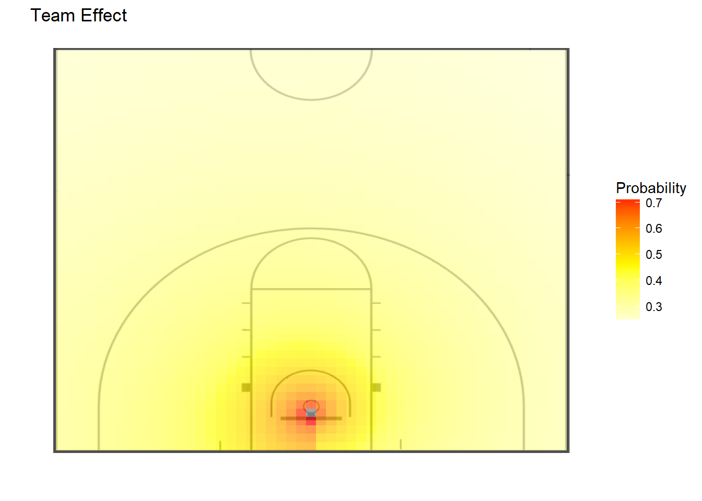
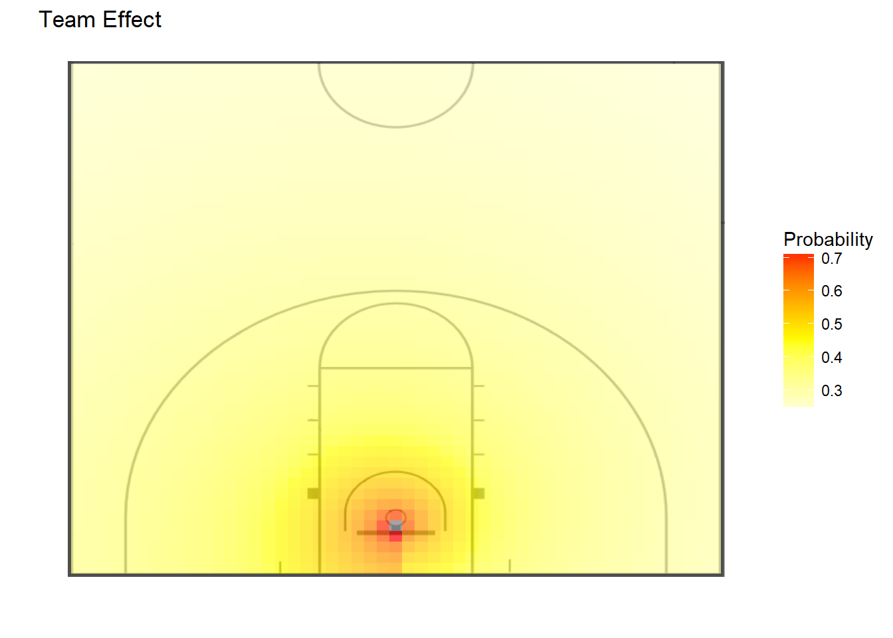

Chapter 7 Models
For our models, we consider the shot location, the shooter identity, and shooting outcomes in previous games as factors that can affect a shot outcome. In every model, we use Gibbs sampling in the JAGS library to build a logistic regression model that provides the posterior distribution of the shot location parameters (distance and angle). The model does not account for covariance between these predictors. In addition, we build mixed effects and discounted likelihood models to control for shooter identity and game identity, respectively. These models will show us how consistent the show location parameters are between between shooters and between games. In our sampling method, we set priors using the Maximum Likelihood Estimates for the first four games in the dataset, and we initialize our chains using values of 0 for all means, and 1 for all variances.
Diagnostic plots for these models can be found in Appendix 1.
7.0.0.1 Generalized Linear Model
The results of the credible intervals are reported for the same four players, in the same order.


The five plots above show the posteriors of the generalized linear model parameters for the four players and seasons that we investigated in the Exploratory Data Analysis section, and the parameters for the entire team over all seasons. From these plots, we see that the effect of the angle contains zero, and it is therefore probably not predictive of a made shot. We also see that the 95% credible interval on the effect of distance is completely negative, which follows the intuitive idea that the probability of a made shot significantly decreases as distance from the basket increases.
7.0.0.2 Hierarchical Generalized Linear Model

The hierarchical model shows us that our four high-usage players of interest do not appear to be randomly spread across the population of players. The intercept plot shows that all four are in or close to the top half of values, and the radius plot shows the opposite with the four players trending towards lower parameter values. The high intercepts make intuitive sense, because the players who take a lot of shots are generally more capable of making them under baseline conditions than their teammates are. However, the observation that these players would have a more drastic drop in field goal percentage than an average Duke player as they move farther from the basket is surprising.
In the plots below, we have contour plots showing players’ expected field goal percentages at different locations on the court. Between our four players of interest, we can observe how player 1 is more effective on the ____ side of the basket than the others, and how player ____ is the ___ long-range shooter.
 

7.0.0.3 Game-by-Game Hierarchical Model


From these plots, we can observe that all of the models have different strengths. The simple generalized linear model that does not account for player effects or game-by-game variation has the highest classification rate (with a 0.50 probability cutoff) and the smallest Mean Squared Error. However, the model with mixed effects and a discounted likelihood with a discount weight of 0.75 has the highest likelihood.
Upon investigating why the smallest delta has the best likelihood, but the worst classification rate and MSE, we noticed that as delta decreases, the distribution of the fitted values becomes smoother. insert graph This explains how ___.